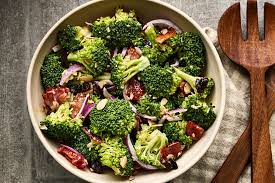

Brocoli Salad
Return to home page

Description
Looking for a quick healthy snack? This brocoli salad is for you!
Ingredients
- 2 heads broccoli, cut into florets
- 1 head cauliflower, cut into florets
- 1 medium carrot, shredded
- ¼ medium red onion, minced
- 5 slices cooked and crumbled bacon
Dressing
- 1 cup mayonnaise
- ¼ cup red wine vinegar
- 1 tablespoon cayenne pepper sauce (such as Frank's® RedHot®)
- ½ teaspoon garlic powder
- salt and ground black pepper to taste
Steps
- Bring a large pot of water to a boil. Add broccoli and cauliflower florets to the boiling water and cook for 3 minutes. Drain, then transfer florets to a bowl of ice water to cool.
- Whisk mayonnaise, vinegar, pepper sauce, garlic powder, salt, and pepper for dressing together in a bowl.
- Remove florets from the ice water and put on paper towels to dry.
- When ready to serve, transfer florets to a large bowl. Mix in carrot, onion, and bacon. Pour in dressing and toss until well distributed. Let rest for 5 minutes before serving.